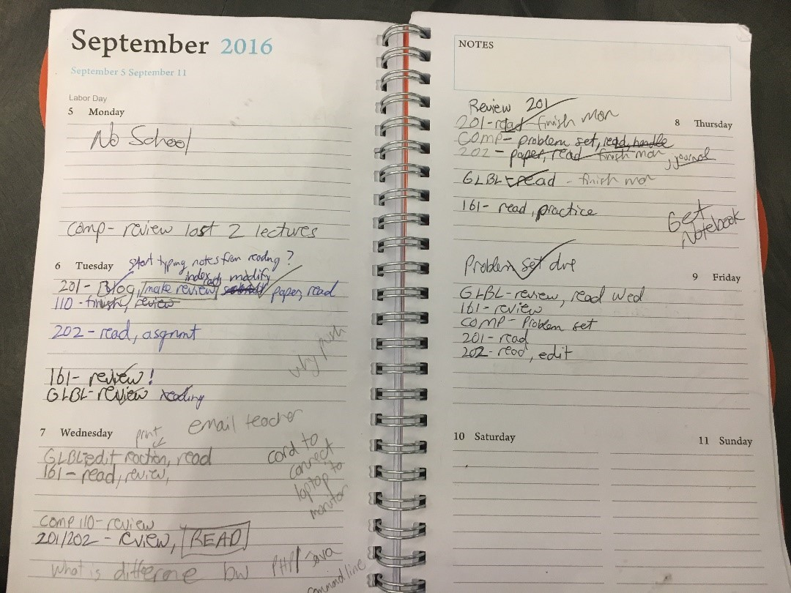

My Own Piles and Files

I have a rather interesting work space in my little apartment. I constantly migrate back and forth between these two areas of my living room (see photos (1) and (2)) as I study and complete different tasks. Some assignments are easier to complete while sitting on the couch with my laptop or a book while others are completed more efficiently with the use of a large monitor, regular keyboard, and mouse.
 The couch area is where most reading, note taking, and test preparation take place. On the floor by the couch is where my book bag resides (see photo (3)). This contains any course folders, loose leaf paper, pens, or pencils I may need (but that I don’t use that often). This book bag also serves as a way to transport digital and physical information as it can easily contain my laptop as well as various notebooks and folders. Because not all of my studying is done in this living room, I need a way to keep my piles and files (physical and digital) with me as I travel from my apartment to my dorm room to other places on campus.
The couch area is where most reading, note taking, and test preparation take place. On the floor by the couch is where my book bag resides (see photo (3)). This contains any course folders, loose leaf paper, pens, or pencils I may need (but that I don’t use that often). This book bag also serves as a way to transport digital and physical information as it can easily contain my laptop as well as various notebooks and folders. Because not all of my studying is done in this living room, I need a way to keep my piles and files (physical and digital) with me as I travel from my apartment to my dorm room to other places on campus.
Any immediate paperwork that I need to be reminded of will be placed on that coffee table for easy access. I will also place physical folders or notebooks containing course-related info on the coffee table if I will need to access that information frequently (or be reminded to pick up the notebook and study it!).
One of the most important physical objects in my study space is my orange planner (see photo (4)). Even though it isn’t a literal “file” it is a container of organized information that I keep with me everywhere. In this planner any and all assignments are written down as well and any other pertinent reminders I may need related to school or work. I do keep a digital calendar on my iPhone for other aspects of my life but this orange planner is solely for tracking and organizing academic information.
 The other side of the living room is where I go when I am writing a paper or working on programming or web related assignments. This space gives the ability to use a large monitor and multiple screens to streamline my workflow. There are no physical piles or files in this area but there are a multitude of digital versions on my computer and kept within cloud storage.
The other side of the living room is where I go when I am writing a paper or working on programming or web related assignments. This space gives the ability to use a large monitor and multiple screens to streamline my workflow. There are no physical piles or files in this area but there are a multitude of digital versions on my computer and kept within cloud storage.
As can be observed in photo (5), I have four course folders on my personal laptop where I store all pertinent information related to those courses. I sort the information by “type” within the folders to make the finding and retrieving of desired documents a painless process.
Photo (6) displays where I place academic materials in cloud storage. The only documents I upload to cloud storage are ones that I want access to from any device as well as have a backup copy of.
 There are two laptops that I use on the desk in addition to the large monitor. I have an older laptop attached to the large monitor as well as my new UNC laptop. I don’t store necessary academic files on my old laptop but I do access academic documents through cloud storage when needed on this device.
There are two laptops that I use on the desk in addition to the large monitor. I have an older laptop attached to the large monitor as well as my new UNC laptop. I don’t store necessary academic files on my old laptop but I do access academic documents through cloud storage when needed on this device.
My cat, Dan, is also an important part of this study space. Even though he may not be a pile or a file, my study environment would not be the same without him. No matter what time of day it is he jumps on the back of my computer chair and rests on my back while I do homework.
Finding an old document…
This part of the assignment is particularly challenging because my husband and I are in the midst of packing up our apartment in Mebane and moving to a place in Carrboro. My goal is to find a Christmas card my best friend Crystal (she lives in Asheville) sent me last year that was very special to me. I chose this document because all of my “official” documents are kept in a filing box in my closet and would be simple to retrieve. Tracking down this card, on the other hand, will be more difficult!
My search began at 1:49 p.m. First, I had to recall the places where I could have possibly stored the card in my apartment. There were three, one of which was a drawer that contained letter and card writing materials as well as a large envelope of personal mail. Unfortunately, this drawer was packed up and moved to Carrboro on Friday!
Left with two other options, I first tried the drawer where I kept personal mail related to my wedding. Even though this was a Christmas card from before I was even engaged, it was possible that I could have stuck it in with other cards. However, I did not find it there (although I did discover some mail I could throw away).
The last option was my file box. This is a portable plastic box in which I keep all of my important documents such as my passport, marriage license, and insurance information. I have several folders within this file box that are pretty poorly organized. There are no tabs on the folders so I have to check the contents to know what type of documents are contained in each folder.
I was able to retrieve the folder containing personal notes and mail and went through the folder item by item. Alas, the Christmas card was nowhere to be found. This led me to the conclusion that it is sitting in a box in our new apartment in Carrboro. My search concluded at 1:54 p.m.
Findings
As I read Malone’s article, the same thought kept running through my mind: it is so much easier in this day and time to hide the clutter behind a computer screen. When physical paper played a significant role in administrative environments it was relatively simple to differentiate those who valued neatness and order over those that did not. As Malone’s study observed, physical documents could often be found more quickly in office environments that reflected systematic organization.
This is not always the rule, however, for there are those of us who have a “method to our madness”. The world was filled with much more paper when I was a child and I was not one to keep my bedroom or locker very neat. And yet, I usually could find whatever I needed pretty quickly just because I sorted my items in a way that made sense to me.
Even though I presently utilize digital files and physical files, the items within those files are typically arranged in piles. In other words, once you get inside the folder there is little to no organization taking place (unless I can take advantage of the computer’s “sort by” option). This is why finding that Christmas card meant going through items in a couple of locations piece by piece.
Thanks to advances in technology I am able to avoid most of those physical piles on my desk or sofa, but digital piles exist in abundance on my devices. I am able to hide some of my messiness by primarily using reminders on my phone as opposed to leaving sticky notes everywhere. The “search” option on my computer makes document retrieval a relatively painless process. It truly seems as though the digital age has given me a cloak of invisibility to hide behind when it comes to purposeful and meaningful organization!